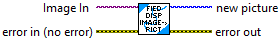
Internal function -- should not be called directly by users.
Complete documentation TBD.
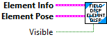
Displays, moves and rotates the field element on the display.
Inputs:
- Element Info -- cluster -- information defining the field element.
- Element Pose -- Pose2d -- Location and orientation of the field element.
Outputs:
-- NONE --
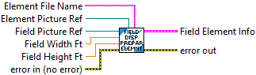
Prepare a field element (robot, game piece, etc.) for display on a field. This routine opens the image file and prepares the image for display, movement, and rotation.
Image files can be PNG, BMP, or JPG.
Inputs:
- Element File Name -- String -- File name of element to display. Relative paths start in the root directory of the application.
- Element Picture Ref -- Picture Reference -- Reference to the control used to display the field element.
- Field Picture Ref -- Picture Reference -- Reference to the control used to display the field.
- Field Width -- double -- Width of the field (feet). This is used to initialize element positioning.
- Field Height -- double -- Height of the field (feet). This is used to initialize element positioning.
- Error in -- error cluster -- input error. Often used to sequence VIs.
Outputs:
- Field Element Info -- cluster -- Contains information used for display of element.
- Error out -- error cluster -- contains error information.
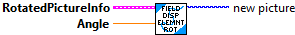
Internal function -- should not be called directly by users.
Complete documentation TBD.
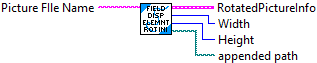
Internal function -- should not be called directly by users.
Complete documentation TBD.
Initialize a PNG image to be rotated.
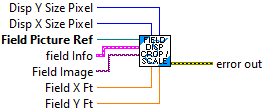
Internal function -- should not be called directly by users.
Complete documentation TBD.
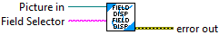
Read the specified field image file, scale and crop the image, then update the picture control with the image.
The field information INI file must be in a FieldInfo subdirectory under the application's main directory. The field image files are also located in this subdirectory.
Inputs:
- Picture In -- Picture Control Reference -- Reference to the picture control to display the field..
- Field Selector -- String -- String containing the name of the field to display. This can be the output of a combo box control.
Outputs:
- Error out -- error cluster -- If an error occured, contains error information.
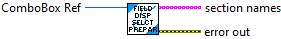
Read the field information INI file and update a ComboBox control with the list of available fields.
The field information INI file must be in a FieldInfo subdirectory under the application's main directory. The field image files are also located in this subdirectory.
Inputs:
- ComboBox Ref -- ComboBox Control Reference -- Reference to the control to be updated.
Outputs:
- Section Names -- String array -- List of field names.
- Error out -- error cluster -- If an error occured, contains error information.
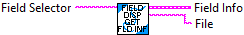
Internal function -- should not be called directly by users.
Complete documentation TBD.
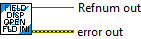
Internal function -- should not be called directly by users.
Complete documentation TBD.
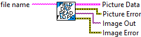
Internal function -- should not be called directly by users.
Compelte documentation TBD.
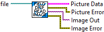
Internal function -- should not be called directly by users.
Complete documentation TBD.